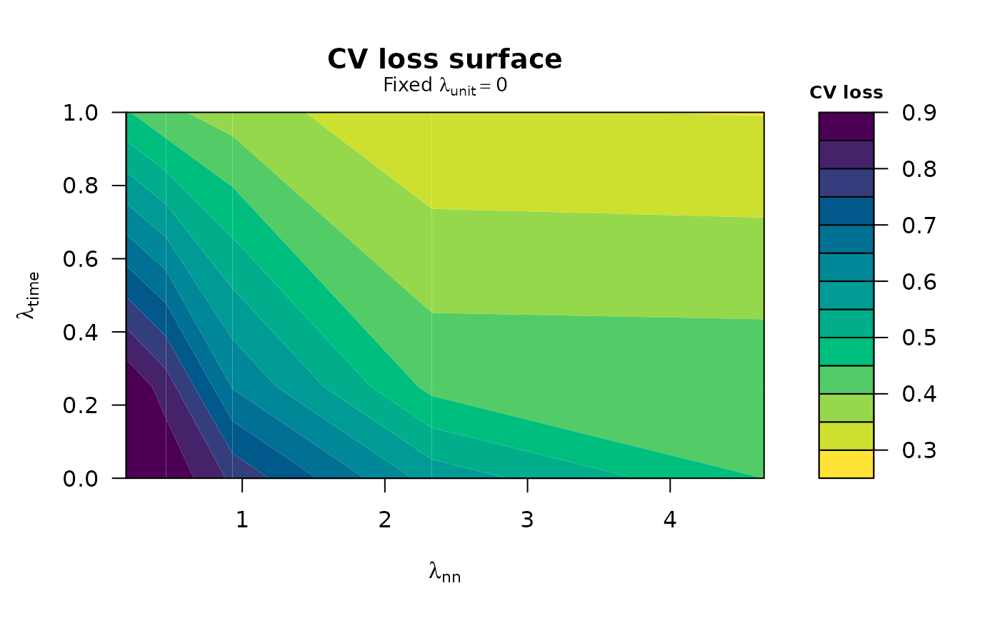

Base-R surface views of a TROP penalty-sensitivity grid
Source:R/sensitivity.R
plot_trop_surfaces.RdDraws the cross-validation-loss surface and the ATT surface from a
trop_sensitivity() grid as two separate, full-width base-graphics plots,
each with a colour key (legend) on the right. Unlike autoplot.cf_trop_grid()
— a single ggplot2 heatmap that packs both into one panel — this view
keeps the surfaces apart so neither is squeezed, and needs no ggplot2. The
surface axes follow the swept penalties recorded on the grid (see the axes
argument of trop_sensitivity()).
Usage
plot_trop_surfaces(
grid,
which = c("both", "cv_loss", "att"),
ask = interactive(),
...
)Arguments
- grid
A
cf_trop_gridreturned bytrop_sensitivity().- which
Which surface(s) to draw:
"both"(default),"cv_loss", or"att". With"both"the two surfaces are drawn as separate figures; on an interactive screen device you are prompted between them (use a multi-page device such aspdf(), or call once per surface, to keep both).- ask
Logical; when drawing both on an interactive device, prompt before the second figure. Defaults to
interactive().- ...
Further arguments passed to
graphics::filled.contour().
Value
Invisibly, a list with the cv_loss and att surface matrices
(rows = y-axis penalty, columns = x-axis penalty).
Examples
# \donttest{
df <- sim_panel(N = 14, T = 9, n_treated = 3, t0 = 6, att = 2, seed = 1)
g <- trop_sensitivity(df, "y", "w", "id", "t",
lambda_time = c(0, 0.25, 1),
control = trop_control(n_cv_cells = 5L, cv_cycles = 1L,
tol = 1e-3, seed = 1L))
plot_trop_surfaces(g, which = "cv_loss")

# }